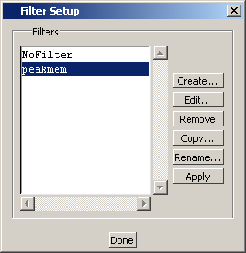
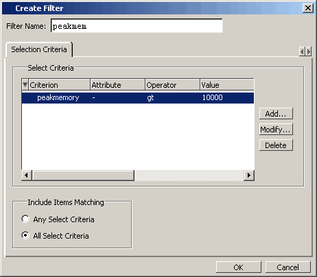
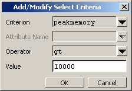
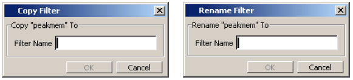

You can filter
functional coverage data displayed in the GUI — including the Assertions,
Cover Directives and Covergroups windows.
Procedure
- Activate
the desired window and use the context sensitive menu pulldown and
select Filter setup (,
or or ).
This opens the Filter Setup dialog box(Figure 1).
Figure 1. Filter Setup Dialog Box
- To create
a new filter, click the Create button
to open the Create Filter dialog box(Figure 2).
Figure 2. Create Filter Dialog Box
The
Edit Filter dialog box—which you open by clicking the Edit button in the Filter Setup dialog box—contains
all of the same functions as the Create Filter dialog box.
- Click the Add button to add criteria, attributes,
operators, and values to the filter in the Add/Modify Select Criteria
dialog box(Figure 3).
Figure 3. Add-Modify Select
Criteria Dialog Box
The Criterion field
includes a dropdown list that corresponds to the columns in the
Assertions, Cover Directives, and Covergroups windows, allowing
you to filter the display according to values in a specific column
or columns.
- You can
copy the criteria from an existing filter into another by clicking
the Copy button in the Filter
Setup dialog box, which opens the Copy Filter dialog box. Or, you
can rename a filter by clicking the Rename button
and opening the Rename Filter dialog box.
Figure 4. Copy and Rename Filter
Dialog Boxes
The filter
you just created appears in the Filters list within the Filter Setup
dialog box (Figure 1).
- Either select Apply to filter the displayed data
immediately, or select Done to
exit the dialog box.